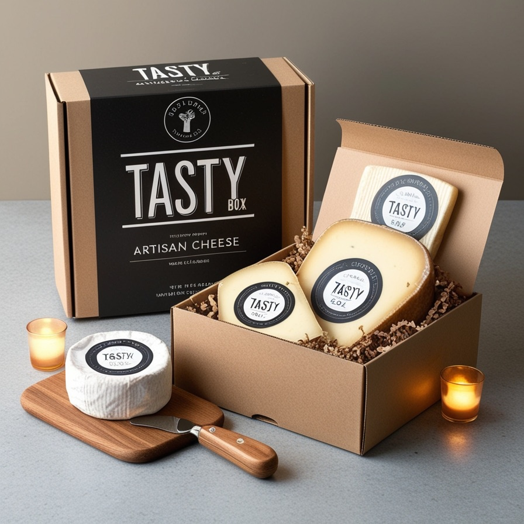
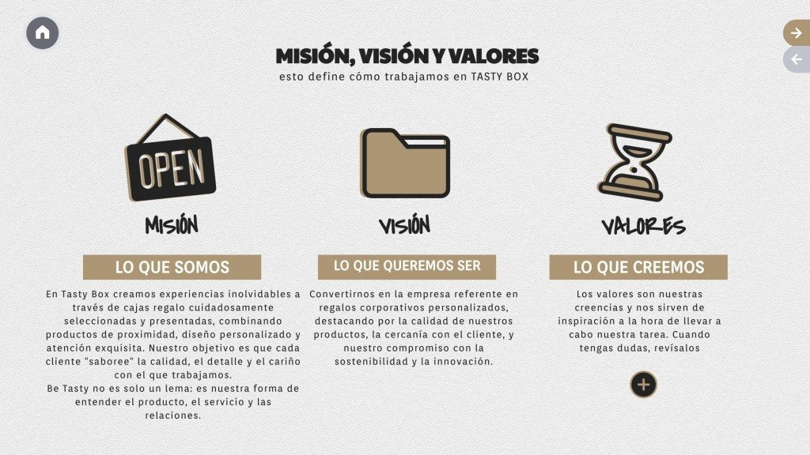

Este curso, en el IES Ribera de Castilla, estrenamos nueva empresa para formar a nuestro alumnado: Tasty Box, una empresa simulada especializada en la venta de cajas corporativas gourmet con productos de Castilla y León. Y os quiero contar cómo nace una empresa simulada… pero desde el otro lado: el del profesor.

Crear una empresa simulada en el aula no es simplemente hacer que los alumnos “jueguen” a trabajar en una empresa. Detrás hay un trabajo docente que pocas veces se ve: planificación, coordinación, diseño de recursos, gestión tecnológica…
1. La idea inicial
Todo empieza con una idea empresarial que pueda ser educativamente interesante para el alumnado. En mi caso, quería que el proyecto conectara con nuestro entorno y permitiera trabajar todas las áreas de una empresa real: gestión de compraventa, contabilidad, marketing, tesorería, atención al cliente… Además, como ya sabéis, me atrae todo lo relacionado con la gastronomía, así que la temática me resultaba especialmente motivadora, y me ofrecía la posibilidad de trabajar con distintos tipos de IVA, algo muy útil para el alumnado.
Por si fuera poco, la idea abría la puerta a colaboraciones duraderas y reales con otras empresas simuladas, como Riberpublic, la otra empresa del centro, o Decasarre, mi primera empresa simulada en el IES Arca Real. Estas empresas se convierten en proveedores reales de Tasty Box, lo que mejora notablemente la experiencia del alumnado al simular relaciones comerciales auténticas entre empresas. Y así surge Tasty Box: una propuesta atractiva, original y muy versátil para el aula.
2. Los primeros pasos
Antes de que el alumnado pueda “entrar a trabajar”, hay muchas piezas que montar.
Diseñar el logotipo y el nombre de la empresa es el primer paso para que la identidad visual empiece a desarrollarse. Después, una de las primeras tareas del alumnado en el departamento de Comercial y Marketing será crear una nueva identidad visual —eligiendo los colores de marca y rediseñando el logo a partir del original— para hacerla suya desde el principio.
Crear la página web, el correo corporativo y las redes sociales es esencial, como en una empresa real, para darnos a conocer e incrementar ventas y relaciones con otras empresas simuladas. Lamentablemente no es fácil desde el centro: tenemos muchas limitaciones técnicas impuestas por la Consejería que nos impiden trabajar como una empresa real (por ejemplo, no podemos acceder a nuestra propia web desde los ordenadores del aula, y muchas herramientas esenciales están bloqueadas).
Organizar el flujo de trabajo, el reparto de tareas y el espacio en Microsoft Teams, con un SharePoint como página de inicio, carpetas compartidas y seguimiento de tareas. Este es nuestro “cuartel general”, donde el alumnado colabora, comunica y comparte recursos como si estuviera dentro de una empresa de verdad.
Preparar el aula para usar software profesional como Aplifisa, Nominasol y Billin, para que la gestión sea lo más realista posible. De nuevo encontramos limitaciones de la Consejería que nos impiden trabajar conectados en tiempo real o actualizar los programas. Esto nos llevará probablemente a implementar un ERP que permita trabajar online, con varios alumnos realizando la misma tarea a la vez (facturar, contabilizar, elaborar nóminas…). Ahora mismo el profesorado está probando opciones como ODOO o A3 para ver cuál es viable educativamente.
Dar de alta la empresa en la plataforma SEFED, contratar al alumnado para que tuviera su NUSS y certificados electrónicos, ingresar dinero en las cuentas, crear proveedores, clientes y acreedores simulados y, en general, preparar los entornos de trabajo virtuales y digitales.
Definir el lema, la misión, la visión y los valores de la empresa. Puede parecer irrelevante, pero creo necesario fijar estos elementos desde el principio para que los empleados sepan cómo deben comportarse en la empresa simulada. Será lo que, a largo plazo, determine su cultura.

Idealmente, deberían ser los propios alumnos quienes realizaran toda esta labor inicial de creación y planificación. Pero poner en marcha una empresa y atender a la vez las dudas de 27 alumnos que trabajan en 7 departamentos distintos es un reto enorme para un docente, así que mi consejo es hacer este trabajo inicial antes de introducir al alumnado. Configuro los elementos esenciales y les doy una formación inicial sólida que les permita trabajar de forma autónoma. En paralelo, los alumnos desarrollan su propio plan de empresa, dando forma a su idea con su logo, redes y página web.
3. La formación inicial
Antes de empezar la actividad, el alumnado recibe formación práctica en los programas de gestión que usará durante el curso: Billin en el módulo de PIAC, Aplifisa en Simulación Empresarial y Nominasol en Gestión de Recursos Humanos, justo el mes previo a su incorporación a la empresa simulada.
También imparto una formación inicial donde explico cómo está estructurada la empresa, cuáles son los departamentos y los flujos de comunicación previstos. Pero siempre invito al alumnado a ser creativo, a observar críticamente la organización y a proponer e implementar cuantas mejoras considere convenientes: esa iniciativa forma parte del aprendizaje y les ayuda a desarrollar sus competencias.
Una vez la empresa simulada está en marcha, comienza el verdadero reto docente: el acompañamiento diario al alumnado, guiándole a través de las evaluaciones de desempeño.
A partir de ahí mi papel es el de acompañante: alguien que observa, da feedback constante, anima a mejorar y ayuda a descubrir las competencias personales como emprendedores. El resto de esta historia —las dinámicas, los retos, las ideas que surgen— os la contaré en próximas entradas.